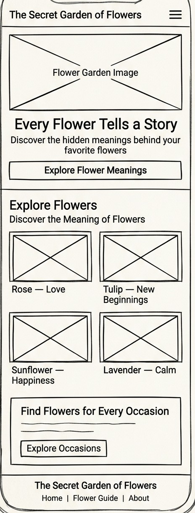
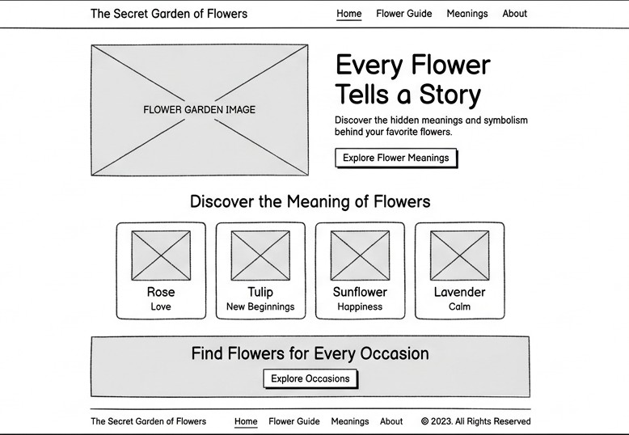

1. Site Name
The Secret Garden of Flowers
This name creates a sense of discovery and wonder. It suggests that every flower has a story, a symbolic meaning, or a message visitors can explore.
Optional domain idea:
thesecretgardenofflowers.com
Domain availability has not been checked.
2. Site Purpose
The Secret Garden of Flowers will be an informative and visually engaging website that helps visitors learn about the meanings, symbolism, and common associations of different flowers. Visitors will be able to explore flower profiles, discover meanings connected to emotions or occasions, and use the information to choose flowers for gifts or personal arrangements.
3. Scenarios
These questions represent information visitors may want to find:
- What flower could I give someone to express love, gratitude, or friendship?
- What do roses, tulips, sunflowers, and lavender symbolize?
- Which flowers are associated with hope, new beginnings, or comfort?
4. Color Scheme
The palette combines soft pink and mauve tones with white space to create a calm, romantic, botanical atmosphere.
Primary headings, navigation, and buttons.
Main background and content space.
Decorative accents and highlights.
Secondary text and descriptions.
Card backgrounds, borders, and subtle accents.
Text and background combinations should be checked with the WebAIM Contrast Checker.
5. Typography
Headings — Cormorant Garamond
Every flower tells a story.
Cormorant Garamond will be used for the main title, page headings, and featured flower names. Its editorial style supports the botanical theme.
Body text — Montserrat
Discover the meaning behind your favorite flowers.
Montserrat will be used for paragraphs, navigation, buttons, labels, and flower descriptions because it is clear and readable on different screen sizes.
6. Wireframes
The homepage wireframes show the page structure at two viewport sizes. They should be black-and-white sketches focused on layout and functionality rather than final colors, photography, or decorative styling.

